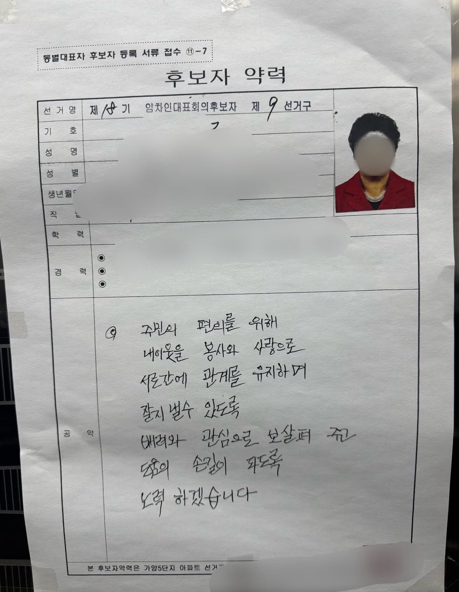
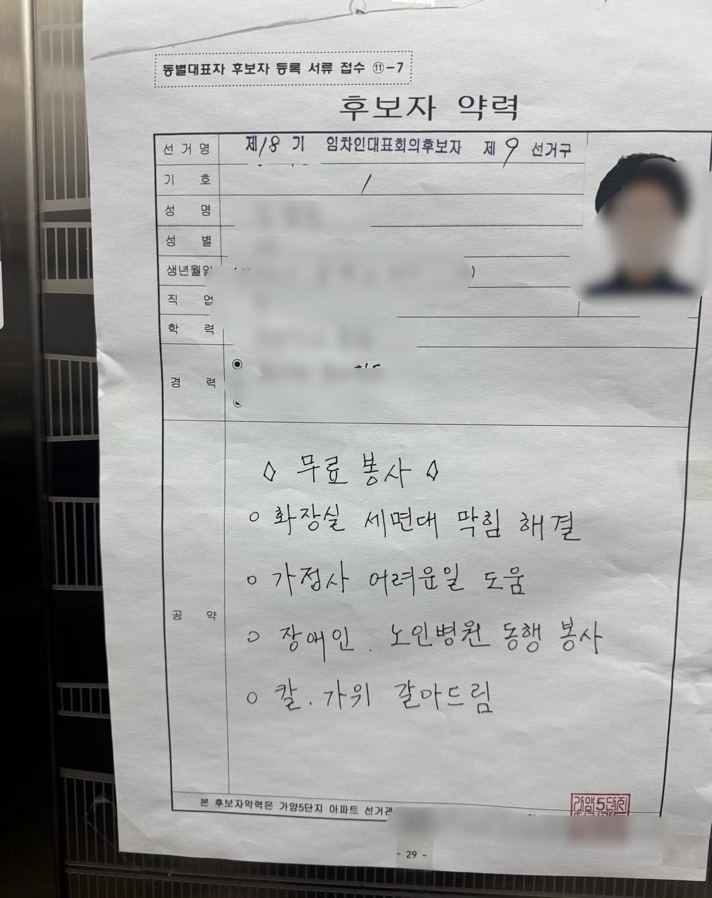

추상적 vs 구체적


추상적 vs 구체적
반장선거임?
동대표 선거 같은데
집어치우고 맘스터치나 가져와보세요

"찰싹"
가양5단지라...흠....
저기 동네 분위기 어떰. 5단지는 아닌데 이사가려고 알아보는 중인데
등촌 칼국수가 많음!
오 그건 장점인데
아 등촌칼국수 마렵네;
요즘 서울 부동산 재밌는게 옛날에 사람들이 거들떠도 안본다던 썩촌들이 대폭등빔 맞고 죄다 신혼부부 살기 좋은 곳으로 둔갑함
우리집도 당산쪽인데 2년전까지만 해도 담배좀 작작 피라고 존나 싸우던 동네였는데, 부동산대폭등빔 맞고 절멸됨
가양쪽도 비슷할듯ㅋㅋㅋ과거에는 별로지만 지금은 아님
그니까ㅋㅋㅋ 나도 동대문 본가 거의 게토수준이었는데 요즘 ㅈㄴ 올랐더라. 나는 어디로 가나..
나 초딩때 반장되면 맨날 흰 우유 초코우유로 바꿔준다하면 반장뽑아줬는데 애새키덜 맨날 건의만하고 바뀌진않음
노력도르
저기 나온 후보들도 수준 비슷함
재건축 물건 하나 샀다가 시발 치가 떨린다
국회의원 선거 예행연습한거지 뭐
뽑아주시면 수영장 딸린 센터 지어서 복지 늘리겠습니다
당선 되면 수영장은 안 하고
항상 하던데로 내가 볼때 멀쩡하던
도로뒤엎기는 안전문제랍시고 공사함
(진짜 의지가 있는데 예산 문제로 막혔는지 모르지만)
구체적 -> 주민 죄다 와서 칼 줄텐데 임기내내 칼 가느라 아무것도 못할거같은데 ㄷㄷ
주말이나 달에 몇주차 특정요일만 갈아준다 하겠지 설마 아무때나 갈아주겠어
닥후지 칼가위 갈아주시는데
저거 칼갈아주는거 받으면 좋음 ㅋㅋㅋㅋㅋㅋ
7년쯤 됐나? 동네에서 가끔 칼갈아주시는분 계셨는데
그분한테 칼갈이 받은 식칼이 지금도 집에서 가장 날카로움 ㅋㅋㅋㅋㅋ
무슨 입대위 후보자가 변기를 뚫어주시냐..
칼도갈아주고
닥후!
우리 동대표가 딱 추상적 vs 구체적 후보 둘 대결이었는데 구체적 동대표 당선됨 ㅋㅋ
자원봉사 자주다니는 분인듯
난 후자 ㅎㅎ 아래쪽이 t성향일거같음 위에는 두루뭉실하게ㅜ말바뀔거같음 ㅋㅋ
칼세트중 제일 작은 칼 과도로도 쓰고 마늘도 썰고 이래저래 쓰니 이가 나갔는데 칼갈아드림은 솔깃하네
칼갈이는 못참지
단지 근처 교회에서 와서 칼 갈아주는건 많이 봤는데
장충금 해먹어야지~
임차인 대표회의는 뭐지... 임대아파트인가?
닥후
칼이랑 가위갈아주는데 어케 참음. 2번ㄱㄱ
칼 갈아주시는 분 모셔야지
경험상 1번 성향의 후보가 되면 이것저것 많이하는데 나도 피곤함. 2번은 하는 일은 없어보이는데 하겠다고 한 건 다 함. 가끔 한다 해놓고 안하긴 하는데 대신 존만하더라도 딴 거 하고있고. 파곤하진 않음. 일장 일단이라면 일장일단인데 2번 고름
닥후
카리나 가위 갈아주는걸 어케참아